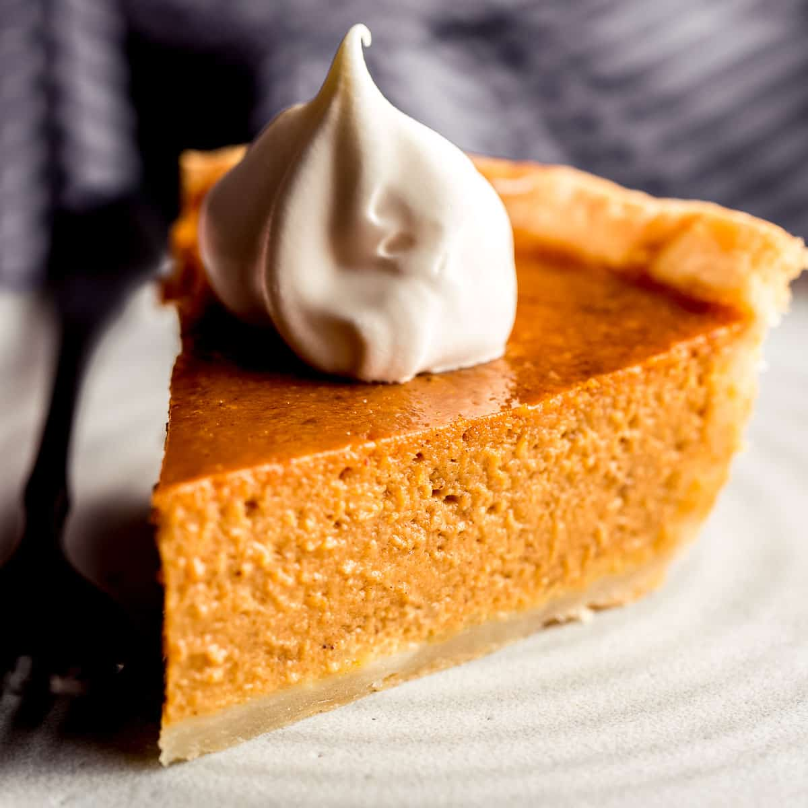

Pumpkin Pie Your Way

Thanksgiving wouldn't be complete without a homemade pumpkin pie. But we're going to let you in on a little secret: Making the seasonal dessert is actually quite simple. Don't let the season pass you by without trying this easy pumpkin pie recipe.
Easy Pumpkin Pie Ingredients
- Pie Crust
- Pumpkin Puree
- Sweetened Condensed Milk
- Eggs
- Pumpkin Pie Spice
Directions
- Preheat the oven to 425 degrees F (220 degrees C). Fit pie crust into a 9-inch pie dish and place it on a baking sheet.
- Combine pumpkin puree, condensed milk, eggs, and pumpkin pie spice in a large bowl; mix until combined. Pour into the pie crust.
- Bake in the preheated oven for 15 minutes. Reduce heat to 350 degrees F (175 degrees C) and continue to bake until filling is set, 35 to 40 minutes.
- Remove from the oven, set on a wire rack, and cool completely before serving.